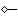
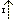

ArgoUML allows you to draw use case diagrams. When you create a new project it has a use case diagram created by default, named use case diagram 1. Select this by button 1 click on the diagram name in the explorer (the upper left quadrant of the user screen).
New use case diagrams can be created as needed through Create Diagram on the main menu bar or on the Create Diagram Toolbar. They are edited in the editing pane (the upper right quadrant of the user screen).
To add an actor to the diagram use button 1 click on the actor
icon on the editing pane toolbar
( ) and then button 1 click
at the location where you wish to place it. The actor can be moved
subsequently by button 1
motion (i.e. button 1 down over the actor to
select it, move to the new position and button 1 release to drop the
actor in place.
) and then button 1 click
at the location where you wish to place it. The actor can be moved
subsequently by button 1
motion (i.e. button 1 down over the actor to
select it, move to the new position and button 1 release to drop the
actor in place.
Multiple actors can be added in one go, by using button 1 double
click on the actor icon. Each subsequent button 1 click will drop an
actor on the diagram.
A button 1 click on the select icon
(
 )
will stop adding actors.
)
will stop adding actors.
The actors name is set in its property panel. First select the actor (if not already selected) on the editing pane using button 1 click. Then click on the Properties tab in the details pane. The name is entered in the name field, and will appear on the screen.
As a shortcut, double button 1 click on the name of the actor in the editing pane (or just typing on the keyboard when an actor is selected) will allow the name to be edited directly. This is a convenient way to enter a name for a new actor.
Having created the actor, you will see it appear in the explorer (the upper left quadrant of the user screen). This shows all the artifacts created within the UML design. A drop down at the top of the explorer controls the ordering of artifacts in the explorer. The most useful are the Package-centric (default) and Diagram-centric. The latter shows artifacts grouped by the diagram on which they appear.
The procedure for adding use cases is the same as that for adding
actors, but using the use case icon on the editing pane toolbar
( ).
).
By default use cases in ArgoUML do not display their extension points (for use in extend relationships). You can show the extension point compartment in one of two ways.
Select the use case in the editing pane with button 1 click, then select the Style tab in the details pane and button 1 click on the Display: Extension Points check box.
Use button 2 click over the use case in the editing pane to display a context-sensitive pop-up menu and from that choose Show/Show Extension Point Compartment.
The same approaches can be used to hide the extension point compartment.
There are two ways to add an extension point to a use case.
Select the use case on the editing pane with button 1 click. Then click on the Add Extension Point icon (
 ) on the toolbar, and a
new extension point with default name and location will be added
after any existing extension points.
) on the toolbar, and a
new extension point with default name and location will be added
after any existing extension points.![[Note]](images/note.png)
Note The Add Extension Point icon is grayed out and unusable until a use case is selected.
Select the use case on the editing pane with button 1 click and then select its property tab in the details pane. A button 2 click over the Extension Points: field will bring up a context-sensitive pop-up menu. Select Add to add a new extension point.
If any extension points already exist, they will be shown in this field on the property tab. The new extension point will be inserted immediately before the entry over which the pop-up menu was invoked. This ordering can be changed later by using the Move Up and Move Down entries on the pop-up menu.
Whichever method is used, the new extension point is selected, and its property tab can be displayed in the details pane. The name and location of the extension point are free text, set in the corresponding fields of the property tab.
An existing extension point can be edited from its property tab. The property tab can be reached in two ways.
If the extension point compartment for the use case is displayed on the diagram, select the use case with button 1 click and then select the extension point with a further button 1 click. The property tab can then be selected in the details pane.
Otherwise select the use case and its property tab in the details pane. A button 1 click on the desired entry in the Extension Points field will bring up the property tab for the extension point in the details pane.
The name and location fields of the extension point may then be edited.
As a shortcut, where the extension point compartment is displayed, double click on the extension point allows text to be typed in directly. This is parsed to set name and location for the extension point.
Extension points may be deleted, or their ordering changed by using the button 2 pop-up menu over the Extension Points field in the use case property tab.
Having created an extension point, it will appear in the explorer (upper left quadrant of the user screen). Extension points are always shown in a sub-tree beneath their owning use case.
To join a use case to an actor on the diagram use button 1 click on the association icon on the editing pane toolbar (). Hold button 1 down at the use case, move to the actor and release button 1 (or alternatively start at the actor and finish at the use case).
This will create a straight line between actor and use case. You can segment the line by holding down button 1 down on the line and moving before releasing. A vertex will be added to the line, which you can move by button 1 motion. A vertex can be removed by picking it up and sliding to one end of the line.
Multiple associations can be added in one go, by using button 1
double click on the association icon. Each subsequent button 1
down/motion/release sequence will join an actor to a use case. Use
button 1 on the select icon
( ) to stop adding
associations.
) to stop adding
associations.
It is also possible to add associations using small “handles” that appear to the left and right of a use case or actor when it is selected and the mouse is over it. Dragging the handle from a use case to an actor will create an association to that actor (and similarly by dragging a handle from an actor to a use case).
Dragging a handle from a use case into empty space will create a new actor to go on the other end. Similarly dragging a handle from an actor into empty space will create a new use case.
It is possible to give an association a name, describing the relationship of the actor to the use case, although this is not usually necessary. This is done through the property tab of the association. Such a name appears alongside the association near its center.
There are two ways of setting the navigation of an association.
Use button 2 click on the association to bring up a context-sensitive pop-up menu. The Navigability sub-menu has options for bi-directional navigation (the default, with no arrows) and for navigability Actor→Use Case and Use Case→Actor.
Use button 1 to select the association and select its property tab in the details pane. This shows a field named Association Ends:, with entries for each end labeled by the actor or use case name and its multiplicity. Select the end that should be at the tail of the arrow with button 1 click. This brings up the property tab for the association end. Use button 1 click to uncheck the Navigability box.
Note This may seem counter-intuitive, but in fact associations by default are navigable in both directions (when no arrows are shown). This process is turning off navigation at one end, rather than turning it on at the other.
You will see it is possible to give an association end a name in its property tab. This name will appear at that end of the association, and can be used to indicate the role being played by an actor or use case in an association.
For example a time management system for a business may have use cases for completing time sheets and for signing off time sheets. An employee actor may be involved in both, one as an employee, but the other in a role as manager.
There are two ways of setting multiplicity at the end of an association.
Button 2 click over the end of an association will cause a context-sensitive pop-up menu to appear with a sub-menu labeled Multiplicity. This allows you to select from 1 (the default), 0..1, 0..* and 1..*.
Bring up the property sheet for the association end as described for setting navigation (see the second option in Section 3.4.3.1, “Setting Navigation”). A drop down menu gives a range of multiplicity options that may be selected.
The second of these two approaches has a wider range of options, although ArgoUML does not currently allow the user to set an arbitrary multiplicity.
The procedure for adding an include relationship is the same as that for adding an association, but using the include icon from the editing pane toolbar () to join two use cases.
Since include relationships are directional the order in which the two ends are selected is important. The including (main) use case should be selected first (button 1 down) and the included (subsidiary) use case second (button 1 release).
It is possible to name include relationships using the property tab, but this is rarely done, and will not be displayed on the use case diagram.
The procedure for adding an extend relationship is the same as
that for adding an include relationship, but using the extend icon
from the editing pane toolbar
( ) to join two use
cases.
) to join two use
cases.
As with include relationships, the order of selection matters. In this case, the extending (subsidiary) use case should be selected first (button 1 down) and the extending (main) use case second (button 1 release).
| Note |
|---|---|
This is the reverse of the include relationship, but reflects the way that designer's tend to think. The fact that the extend icon's arrow points upward (the opposite of the include icon) should help remind you of this. | |
To set a condition for the extend relationship, select the extend relationship in the editing pane (button 1 click) and then bring up its property tab in the details pane ((button 1 click on the tab). The text of the condition may be typed in the Condition field. Long conditions may be split over several lines if desired. The condition is displayed under the «extend» label on the diagram.
It is possible to name extend relationships using the property tab, but this is rarely done, and will not be displayed on the use case diagram.
The procedure for adding generalizations, is the same as for
adding extend relationships, but using the generalization icon from
the editing pane toolbar
( ).
).
Since generalization is a directed relationship, the order of selection matters. The specialized use case should be selected first (button 1 down) and the generalized second (button 1 release).
It is also possible to add generalizations using small “handles” that appear to the top and bottom of a use case when it is selected. Dragging the handle at the top to another use case will create a generalization. The original use case is the specializing end, and the use case to which the handle was dragged will be the generalizing end. Dragging into empty space will create a new use case to be the generalizing end.
Similarly dragging on the bottom handle will create a generalization in which the original use case is the generalizing end.
Generalization is also permitted between actors, although its use is beyond the scope of this tutorial. Unlike use cases there are no generalization handles on actors, so generalizations must be created using the toolbar icon.
It is possible to name generalization relationships using the property tab, but this is rarely done. If a name is provided, it will be displayed on the use case diagram.
UML has the concept of stereotyping as a way of extending the basic notation. It may prove useful for example to model a problem at both the business level and the engineering level. For both of these we will need use cases, but the use cases at the business level hold a different sort of information to those at the engineering level. Very likely they use different language and notation in their underlying use case specifications.
Stereotypes are used to label UML artifacts such as use cases, to indicate that they belong to a certain category. Such labels are shown in guillemots («») above the name of the artifact on the diagram. The UML standard defines a number of standard stereotypes, and the user may define more stereotypes of his own.
You will see that ArgoUML has a drop down selector, Stereotype on every property tab. This is populated with the standard stereotypes, to which you may add your own user defined ones.
The details of stereotyping are beyond the scope of this tutorial. The reference manual (see Section 14.4, “Stereotypes”) documents the support provided in ArgoUML.
![[Warning]](images/warning.png) | Warning |
|---|---|
ArgoUML is missing a few of the standard UML stereotypes. In addition not all artifacts will actually display the stereotype on the diagram. At present this includes use cases and actors. | |
ArgoUML has some simple documentation facilities associated with artifacts on a diagram. In general these should be used only to record the location of material in documents that can be handled by a mainstream editor or word processor, not the actual documentation itself.
Documentation for a particular artifact is recorded through the documentation tab in the details pane (the quadrant of the user screen at the bottom right).
In addition annotation may be added to diagrams using the text icon
on the editing pane toolbar
( ).
).
The recommendation is that a use case diagram should use the documentation tab of actors to record information about the actor, or if the actor is complex to refer to a separate document that holds information about the actor.
The documentation tab of use cases should record the location of the use case specification. The information in a use case specification (for all but the simplest use cases) is too complex to be placed directly in the tab.
The project should also have a separate vision document and supplementary requirements specification. A text annotation on diagrams may be used to refer to these if the user finds this helpful.
| Warning |
|---|---|
The documentation tab includes a Deprecated check box. The state of this flag is not preserved over save and load in the current release of ArgoUML | |
ArgoUML provides a series of tools to provide arbitrary graphical annotation on diagrams (we have already mentioned the text tool). These are found at the right hand end of the editing pane toolbar and are fully documented in the reference manual (see Chapter 9, The Editing Pane).
The rectangle tool can be used to draw the boundary box. Use the button 2 context-sensitive Ordering pop-up menu to place it behind everything else. However there is no way to change its fill color from the default white. You may therefore prefer to draw the boundary box as four lines. This is the method used for the diagrams in this chapter.
| Note |
|---|---|
The editing pane in ArgoUML has a grid to which objects snap to aid in drawing. The size of this grid and its effect may be altered through the View menu (using Adjust Grid and Adjust Grid Snap). This is described fully in the reference manual (see Chapter 12, The Menu bar). | |